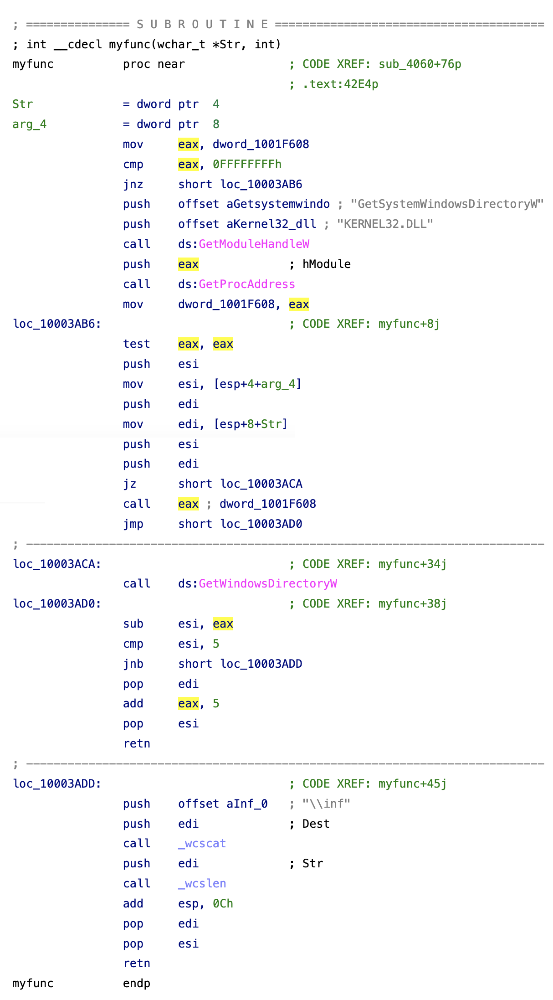
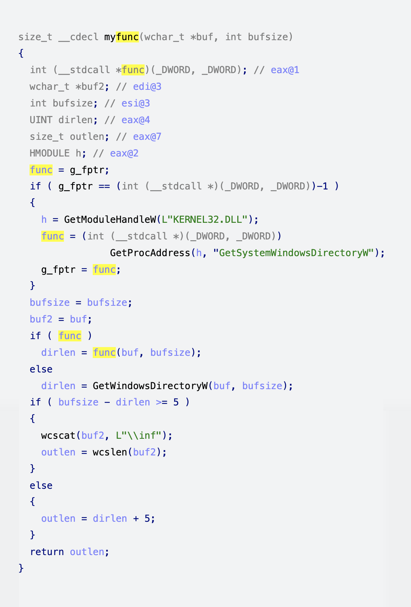

Introduction to Decompilation vs. Disassembly
A decompiler represents executable binary files in a readable form. More precisely, it transforms binary code into text that software developers can read and modify. The software security industry relies on this transformation to analyze and validate programs. The analysis is performed on the binary code because the source code (the text form of the software) traditionally is not available, because it is considered a commercial secret.
Programs to transform binary code into text form have always existed. Simple one-to-one mapping of processor instruction codes into instruction mnemonics is performed by disassemblers. Many disassemblers are available on the market, both free and commercial. The most powerful disassembler is our own IDA Pro. It can handle binary code for a huge number of processors and has open architecture that allows developers to write add-on analytic modules.
Decompilers are different from disassemblers in one very important aspect. While both generate human readable text, decompilers generate much higher level text which is more concise and much easier to read.
Compared to low level assembly language, high level language representation has several advantages:
- It is consise.
- It is structured.
- It doesn't require developers to know the assembly language.
- It recognizes and converts low level idioms into high level notions.
- It is less confusing and therefore easier to understand.
- It is less repetitive and less distracting.
- It uses data flow analysis.
Let's consider these points in detail.
Usually the decompiler's output is five to ten times shorter than the disassembler's output. For example, a typical modern program contains from 400KB to 5MB of binary code. The disassembler's output for such a program will include around 5-100MB of text, which can take anything from several weeks to several months to analyze completely. Analysts cannot spend this much time on a single program for economic reasons.
The decompiler's output for a typical program will be from 400KB to 10MB. Although this is still a big volume to read and understand (about the size of a thick book), the time needed for analysis time is divided by 10 or more.
The second big difference is that the decompiler output is structured. Instead of a linear flow of instructions where each line is similar to all the others, the text is indented to make the program logic explicit. Control flow constructs such as conditional statements, loops, and switches are marked with the appropriate keywords.
The decompiler's output is easier to understand than the disassembler's output because it is high level. To be able to use a disassembler, an analyst must know the target processor's assembly language. Mainstream programmers do not use assembly languages for everyday tasks, but virtually everyone uses high level languages today. Decompilers remove the gap between the typical programming languages and the output language. More analysts can use a decompiler than a disassembler.
Decompilers convert assembly level idioms into high-level abstractions. Some idioms can be quite long and time consuming to analyze. The following one line code
x = y / 2;
can be transformed by the compiler into a series of 20-30 processor instructions. It takes at least 15- 30 seconds for an experienced analyst to recognize the pattern and mentally replace it with the original line. If the code includes many such idioms, an analyst is forced to take notes and mark each pattern with its short representation. All this slows down the analysis tremendously. Decompilers remove this burden from the analysts.
The amount of assembler instructions to analyze is huge. They look very similar to each other and their patterns are very repetitive. Reading disassembler output is nothing like reading a captivating story. In a compiler generated program 95% of the code will be really boring to read and analyze. It is extremely easy for an analyst to confuse two similar looking snippets of code, and simply lose his way in the output. These two factors (the size and the boring nature of the text) lead to the following phenomenon: binary programs are never fully analyzed. Analysts try to locate suspicious parts by using some heuristics and some automation tools. Exceptions happen when the program is extremely small or an analyst devotes a disproportionally huge amount of time to the analysis. Decompilers alleviate both problems: their output is shorter and less repetitive. The output still contains some repetition, but it is manageable by a human being. Besides, this repetition can be addressed by automating the analysis.
Repetitive patterns in the binary code call for a solution. One obvious solution is to employ the computer to find patterns and somehow reduce them into something shorter and easier for human analysts to grasp. Some disassemblers (including IDA Pro) provide a means to automate analysis. However, the number of available analytical modules stays low, so repetitive code continues to be a problem. The main reason is that recognizing binary patterns is a surprisingly difficult task. Any "simple" action, including basic arithmetic operations such as addition and subtraction, can be represented in an endless number of ways in binary form. The compiler might use the addition operator for subtraction and vice versa. It can store constant numbers somewhere in its memory and load them when needed. It can use the fact that, after some operations, the register value can be proven to be a known constant, and just use the register without reinitializing it. The diversity of methods used explains the small number of available analytical modules.
The situation is different with a decompiler. Automation becomes much easier because the decompiler provides the analyst with high level notions. Many patterns are automatically recognized and replaced with abstract notions. The remaining patterns can be detected easily because of the formalisms the decompiler introduces. For example, the notions of function parameters and calling conventions are strictly formalized. Decompilers make it extremely easy to find the parameters of any function call, even if those parameters are initialized far away from the call instruction. With a disassembler, this is a daunting task, which requires handling each case individually.
Decompilers, in contrast with disassemblers, perform extensive data flow analysis on the input. This means that questions such as, "Where is the variable initialized?"" and, "Is this variable used?" can be answered immediately, without doing any extensive search over the function. Analysts routinely pose and answer these questions, and having the answers immediately increases their productivity.
Side-by-side comparisons of disassembly and decompilation
Below you will find side-by-side comparisons of disassembly and decompilation outputs. The following examples are available:
The following examples are displayed on this page:
- Division by two
- Simple enough?
- Where's my variable?
- Arithmetics is not a rocket science
- Sample window procedure
- Short-circuit evaluation
- Inlined string operations
Division by two
Just note the difference in size! While the disassemble output requires you not only to know that the compilers generate such convoluted code for signed divisions and modulo operations, but you will also have to spend your time recognizing the patterns. Needless to say, the decompiler makes things really simple.
{% tabs %}
; =============== S U B R O U T I N E =======================================
; int __cdecl sub_4061C0(char *Str, char *Dest)
sub_4061C0 proc near ; CODE XREF: sub_4062F0+15p
; sub_4063D4+21p ...
Str = dword ptr 4
Dest = dword ptr 8
push esi
push offset aSmtp_ ; "smtp."
push [esp+8+Dest] ; Dest
call _strcpy
mov esi, [esp+0Ch+Str]
push esi ; Str
call _strlen
add esp, 0Ch
xor ecx, ecx
test eax, eax
jle short loc_4061ED
loc_4061E2: ; CODE XREF: sub_4061C0+2Bj
cmp byte ptr [ecx+esi], 40h
jz short loc_4061ED
inc ecx
cmp ecx, eax
jl short loc_4061E2
loc_4061ED: ; CODE XREF: sub_4061C0+20j
; sub_4061C0+26j
dec eax
cmp ecx, eax
jl short loc_4061F6
xor eax, eax
pop esi
retn
; ---------------------------------------------------------------------------
loc_4061F6: ; CODE XREF: sub_4061C0+30j
lea eax, [ecx+esi+1]
push eax ; Source
push [esp+8+Dest] ; Dest
call _strcat
pop ecx
pop ecx
push 1
pop eax
pop esi
retn
sub_4061C0 endp
{% endtab %}
{% tab title="Pseudocode" %}
signed int __cdecl sub_4061C0(char *Str, char *Dest)
{
int len; // eax@1
int i; // ecx@1
char *str2; // esi@1
signed int result; // eax@5
strcpy(Dest, "smtp.");
str2 = Str;
len = strlen(Str);
for ( i = 0; i < len; ++i )
{
if ( str2[i] == 64 )
break;
}
if ( i < len - 1 )
{
strcat(Dest, &str2[i + 1]);
result = 1;
}
else
{
result = 0;
}
return result;
}
{% endtab %}
Simple enough?
Questions like
- What are the possible return values of the function?
- Does the function use any strings?
- What does the function do?
can be answered almost instantaneously looking at the decompiler output. Needless to say that it looks better because I renamed the local variables. In the disassembler, registers are renamed very rarely because it hides the register use and can lead to confusion.
{% tabs %}
; =============== S U B R O U T I N E =======================================
; int __cdecl sub_4061C0(char *Str, char *Dest)
sub_4061C0 proc near ; CODE XREF: sub_4062F0+15p
; sub_4063D4+21p ...
Str = dword ptr 4
Dest = dword ptr 8
push esi
push offset aSmtp_ ; "smtp."
push [esp+8+Dest] ; Dest
call _strcpy
mov esi, [esp+0Ch+Str]
push esi ; Str
call _strlen
add esp, 0Ch
xor ecx, ecx
test eax, eax
jle short loc_4061ED
loc_4061E2: ; CODE XREF: sub_4061C0+2Bj
cmp byte ptr [ecx+esi], 40h
jz short loc_4061ED
inc ecx
cmp ecx, eax
jl short loc_4061E2
loc_4061ED: ; CODE XREF: sub_4061C0+20j
; sub_4061C0+26j
dec eax
cmp ecx, eax
jl short loc_4061F6
xor eax, eax
pop esi
retn
; ---------------------------------------------------------------------------
loc_4061F6: ; CODE XREF: sub_4061C0+30j
lea eax, [ecx+esi+1]
push eax ; Source
push [esp+8+Dest] ; Dest
call _strcat
pop ecx
pop ecx
push 1
pop eax
pop esi
retn
sub_4061C0 endp
{% endtab %}
{% tab title="Pseudocode" %}
signed int __cdecl sub_4061C0(char *Str, char *Dest)
{
int len; // eax@1
int i; // ecx@1
char *str2; // esi@1
signed int result; // eax@5
strcpy(Dest, "smtp.");
str2 = Str;
len = strlen(Str);
for ( i = 0; i < len; ++i )
{
if ( str2[i] == 64 )
break;
}
if ( i < len - 1 )
{
strcat(Dest, &str2[i + 1]);
result = 1;
}
else
{
result = 0;
}
return result;
}
{% endtab %}
Where's my variable?
IDA highlights the current identifier. This feature turns out to be much more useful with high level output. In this sample, I tried to trace how the retrieved function pointer is used by the function. In the disassembly output, many wrong eax occurrences are highlighted while the decompiler did exactly what I wanted.
{% tabs %} {% tab title="Assembler code" %} 
{% tab title="Pseudocode" %}  {% endtab %}
{% tabs %}
; =============== S U B R O U T I N E =======================================
; int __cdecl myfunc(wchar_t *Str, int)
myfunc proc near ; CODE XREF: sub_4060+76p
; .text:42E4p
Str = dword ptr 4
arg_4 = dword ptr 8
mov eax, dword_1001F608
cmp eax, 0FFFFFFFFh
jnz short loc_10003AB6
push offset aGetsystemwindo ; "GetSystemWindowsDirectoryW"
push offset aKernel32_dll ; "KERNEL32.DLL"
call ds:GetModuleHandleW
push eax ; hModule
call ds:GetProcAddress
mov dword_1001F608, eax
loc_10003AB6: ; CODE XREF: myfunc+8j
test eax, eax
push esi
mov esi, [esp+4+arg_4]
push edi
mov edi, [esp+8+Str]
push esi
push edi
jz short loc_10003ACA
call eax ; dword_1001F608
jmp short loc_10003AD0
; ---------------------------------------------------------------------------
loc_10003ACA: ; CODE XREF: myfunc+34j
call ds:GetWindowsDirectoryW
loc_10003AD0: ; CODE XREF: myfunc+38j
sub esi, eax
cmp esi, 5
jnb short loc_10003ADD
pop edi
add eax, 5
pop esi
retn
; ---------------------------------------------------------------------------
loc_10003ADD: ; CODE XREF: myfunc+45j
push offset aInf_0 ; "\\inf"
push edi ; Dest
call _wcscat
push edi ; Str
call _wcslen
add esp, 0Ch
pop edi
pop esi
retn
myfunc endp
{% endtab %}
{% tab title="Pseudocode" %}
size_t __cdecl myfunc(wchar_t *buf, int bufsize)
{
int (__stdcall *func)(_DWORD, _DWORD); // eax@1
wchar_t *buf2; // edi@3
int bufsize; // esi@3
UINT dirlen; // eax@4
size_t outlen; // eax@7
HMODULE h; // eax@2
func = g_fptr;
if ( g_fptr == (int (__stdcall *)(_DWORD, _DWORD))-1 )
{
h = GetModuleHandleW(L"KERNEL32.DLL");
func = (int (__stdcall *)(_DWORD, _DWORD))
GetProcAddress(h, "GetSystemWindowsDirectoryW");
g_fptr = func;
}
bufsize = bufsize;
buf2 = buf;
if ( func )
dirlen = func(buf, bufsize);
else
dirlen = GetWindowsDirectoryW(buf, bufsize);
if ( bufsize - dirlen >= 5 )
{
wcscat(buf2, L"\\inf");
outlen = wcslen(buf2);
}
else
{
outlen = dirlen + 5;
}
return outlen;
}
{% endtab %}
Arithmetics is not a rocket science
Arithmetics is not a rocket science but it is always better if someone handles it for you. You have more important things to focus on.
{% tabs %}
; =============== S U B R O U T I N E =======================================
; Attributes: bp-based frame
; sgell(__int64, __int64)
public @sgell$qjj
@sgell$qjj proc near
arg_0 = dword ptr 8
arg_4 = dword ptr 0Ch
arg_8 = dword ptr 10h
arg_C = dword ptr 14h
push ebp
mov ebp, esp
mov eax, [ebp+arg_0]
mov edx, [ebp+arg_4]
cmp edx, [ebp+arg_C]
jnz short loc_10226
cmp eax, [ebp+arg_8]
setnb al
jmp short loc_10229
; ---------------------------------------------------------------------------
loc_10226: ; CODE XREF: sgell(__int64,__int64)+Cj
setnl al
loc_10229: ; CODE XREF: sgell(__int64,__int64)+14j
and eax, 1
pop ebp
retn
@sgell$qjj endp
{% endtab %}
{% tab title="Pseudocode" %}
bool __cdecl sgell(__int64 a1, __int64 a2)
{
return a1 >= a2;
}
{% endtab %}
Sample window procedure
The decompiler recognized a switch statement and nicely represented the window procedure. Without this little help the user would have to calculate the message numbers herself. Nothing particularly difficult, just time consuming and boring. What if she makes a mistake?...
{% tabs %}
; =============== S U B R O U T I N E =======================================
wndproc proc near ; DATA XREF: sub_4010E0+21o
Paint = tagPAINTSTRUCT ptr -0A4h
Buffer = byte ptr -64h
hWnd = dword ptr 4
Msg = dword ptr 8
wParam = dword ptr 0Ch
lParam = dword ptr 10h
mov ecx, hInstance
sub esp, 0A4h
lea eax, [esp+0A4h+Buffer]
push 64h ; nBufferMax
push eax ; lpBuffer
push 6Ah ; uID
push ecx ; hInstance
call ds:LoadStringA
mov ecx, [esp+0A4h+Msg]
mov eax, ecx
sub eax, 2
jz loc_4013E8
sub eax, 0Dh
jz loc_4013B2
sub eax, 102h
jz short loc_401336
mov edx, [esp+0A4h+lParam]
mov eax, [esp+0A4h+wParam]
push edx ; lParam
push eax ; wParam
push ecx ; Msg
mov ecx, [esp+0B0h+hWnd]
push ecx ; hWnd
call ds:DefWindowProcA
add esp, 0A4h
retn 10h
; ---------------------------------------------------------------------------
loc_401336: ; CODE XREF: wndproc+3Cj
mov ecx, [esp+0A4h+wParam]
mov eax, ecx
and eax, 0FFFFh
sub eax, 68h
jz short loc_40138A
dec eax
jz short loc_401371
mov edx, [esp+0A4h+lParam]
mov eax, [esp+0A4h+hWnd]
push edx ; lParam
push ecx ; wParam
push 111h ; Msg
push eax ; hWnd
call ds:DefWindowProcA
add esp, 0A4h
retn 10h
; ---------------------------------------------------------------------------
loc_401371: ; CODE XREF: wndproc+7Aj
mov ecx, [esp+0A4h+hWnd]
push ecx ; hWnd
call ds:DestroyWindow
xor eax, eax
add esp, 0A4h
retn 10h
; ---------------------------------------------------------------------------
loc_40138A: ; CODE XREF: wndproc+77j
mov edx, [esp+0A4h+hWnd]
mov eax, hInstance
push 0 ; dwInitParam
push offset DialogFunc ; lpDialogFunc
push edx ; hWndParent
push 67h ; lpTemplateName
push eax ; hInstance
call ds:DialogBoxParamA
xor eax, eax
add esp, 0A4h
retn 10h
; ---------------------------------------------------------------------------
loc_4013B2: ; CODE XREF: wndproc+31j
push esi
mov esi, [esp+0A8h+hWnd]
lea ecx, [esp+0A8h+Paint]
push ecx ; lpPaint
push esi ; hWnd
call ds:BeginPaint
push eax ; HDC
push esi ; hWnd
call my_paint
add esp, 8
lea edx, [esp+0A8h+Paint]
push edx ; lpPaint
push esi ; hWnd
call ds:EndPaint
pop esi
xor eax, eax
add esp, 0A4h
retn 10h
; ---------------------------------------------------------------------------
loc_4013E8: ; CODE XREF: wndproc+28j
push 0 ; nExitCode
call ds:PostQuitMessage
xor eax, eax
add esp, 0A4h
retn 10h
wndproc endp
{% endtab %}
{% tab title="Pseudocode" %}
LRESULT __stdcall wndproc(HWND hWnd, UINT Msg, WPARAM wParam, LPARAM lParam)
{
LRESULT result; // eax@4
HWND h; // esi@10
HDC dc; // eax@10
CHAR Buffer; // [sp+40h] [bp-64h]@1
struct tagPAINTSTRUCT Paint; // [sp+0h] [bp-A4h]@10
LoadStringA(hInstance, 0x6Au, &Buffer, 100);
switch ( Msg )
{
case 2u:
PostQuitMessage(0);
result = 0;
break;
case 15u:
h = hWnd;
dc = BeginPaint(hWnd, &Paint);
my_paint(h, dc);
EndPaint(h, &Paint);
result = 0;
break;
case 273u:
if ( (_WORD)wParam == 104 )
{
DialogBoxParamA(hInstance, (LPCSTR)0x67, hWnd, DialogFunc, 0);
result = 0;
}
else
{
if ( (_WORD)wParam == 105 )
{
DestroyWindow(hWnd);
result = 0;
}
else
{
result = DefWindowProcA(hWnd, 0x111u, wParam, lParam);
}
}
break;
default:
result = DefWindowProcA(hWnd, Msg, wParam, lParam);
break;
}
return result;
}
{% endtab %}
Short-circuit evaluation
This is an excerpt from a big function to illustrate short-circuit evaluation. Complex things happen in long functions and it is very handy to have the decompiler to represent things in a human way. Please note how the code that was scattered over the address space is concisely displayed in two if statements.
{% tabs %}
loc_804BCC7: ; CODE XREF: sub_804BB10+A42j
mov [esp+28h+var_24], offset aUnzip ; "unzip"
xor eax, eax
test esi, esi
setnz al
mov edx, 1
mov ds:dword_804FBAC, edx
lea eax, [eax+eax+1]
mov ds:dword_804F780, eax
mov eax, ds:dword_804FFD4
mov [esp+28h+var_28], eax
call _strstr
test eax, eax
jz loc_804C4F1
loc_804BCFF: ; CODE XREF: sub_804BB10+9F8j
mov eax, 2
mov ds:dword_804FBAC, eax
loc_804BD09: ; CODE XREF: sub_804BB10+9FEj
mov [esp+28h+var_24], offset aZ2cat ; "z2cat"
mov eax, ds:dword_804FFD4
mov [esp+28h+var_28], eax
call _strstr
test eax, eax
jz loc_804C495
loc_804BD26: ; CODE XREF: sub_804BB10+99Cj
; sub_804BB10+9B9j ...
mov eax, 2
mov ds:dword_804FBAC, eax
xor eax, eax
test esi, esi
setnz al
inc eax
mov ds:dword_804F780, eax
.............................. SKIP ............................
loc_804C495: ; CODE XREF: sub_804BB10+210j
mov [esp+28h+var_24], offset aZ2cat_0 ; "Z2CAT"
mov eax, ds:dword_804FFD4
mov [esp+28h+var_28], eax
call _strstr
test eax, eax
jnz loc_804BD26
mov [esp+28h+var_24], offset aZcat ; "zcat"
mov eax, ds:dword_804FFD4
mov [esp+28h+var_28], eax
call _strstr
test eax, eax
jnz loc_804BD26
mov [esp+28h+var_24], offset aZcat_0 ; "ZCAT"
mov eax, ds:dword_804FFD4
mov [esp+28h+var_28], eax
call _strstr
test eax, eax
jnz loc_804BD26
jmp loc_804BD3D
; ---------------------------------------------------------------------------
loc_804C4F1: ; CODE XREF: sub_804BB10+1E9j
mov [esp+28h+var_24], offset aUnzip_0 ; "UNZIP"
mov eax, ds:dword_804FFD4
mov [esp+28h+var_28], eax
call _strstr
test eax, eax
jnz loc_804BCFF
jmp loc_804BD09
{% endtab %}
{% tab title="Pseudocode" %}
dword_804F780 = 2 * (v9 != 0) + 1;
if ( strstr(dword_804FFD4, "unzip") || strstr(dword_804FFD4, "UNZIP") )
dword_804FBAC = 2;
if ( strstr(dword_804FFD4, "z2cat")
|| strstr(dword_804FFD4, "Z2CAT")
|| strstr(dword_804FFD4, "zcat")
|| strstr(dword_804FFD4, "ZCAT") )
{
dword_804FBAC = 2;
dword_804F780 = (v9 != 0) + 1;
}
{% endtab %}
Inlined string operations
The decompiler tries to recognize frequently inlined string functions such as strcmp, strchr, strlen, etc. In this code snippet, calls to the strlen function has been recognized.
{% tabs %}
mov eax, [esp+argc]
sub esp, 8
push ebx
push ebp
push esi
lea ecx, ds:0Ch[eax*4]
push edi
push ecx ; unsigned int
call ??2@YAPAXI@Z ; operator new(uint)
mov edx, [esp+1Ch+argv]
mov ebp, eax
or ecx, 0FFFFFFFFh
xor eax, eax
mov esi, [edx]
add esp, 4
mov edi, esi
repne scasb
not ecx
dec ecx
cmp ecx, 4
jl short loc_401064
cmp byte ptr [ecx+esi-4], '.'
jnz short loc_401064
mov al, [ecx+esi-3]
cmp al, 'e'
jz short loc_401047
cmp al, 'E'
jnz short loc_401064
loc_401047: ; CODE XREF: _main+41j
mov al, [ecx+esi-2]
cmp al, 'x'
jz short loc_401053
cmp al, 'X'
jnz short loc_401064
loc_401053: ; CODE XREF: _main+4Dj
mov al, [ecx+esi-1]
cmp al, 'e'
jz short loc_40105F
cmp al, 'E'
jnz short loc_401064
loc_40105F: ; CODE XREF: _main+59j
mov byte ptr [ecx+esi-4], 0
loc_401064: ; CODE XREF: _main+32j _main+39j ...
mov edi, esi
or ecx, 0FFFFFFFFh
xor eax, eax
repne scasb
not ecx
add ecx, 3
push ecx ; unsigned int
call ??2@YAPAXI@Z ; operator new(uint)
mov edx, eax
{% endtab %}